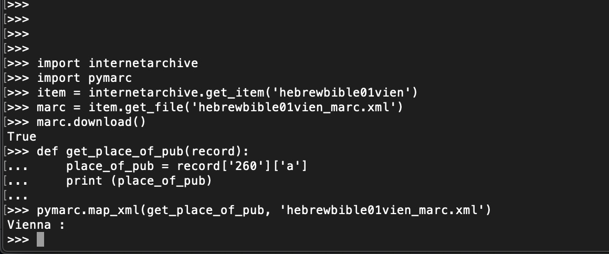

תוכן עניינים
- מטרות השיעור
- למי זה שימושי?
- לפני שנתחיל
- The Antislavery Collection בארכיון האינטרנטי
- גישה לאוסף בארכיון האינטרנטי
- גישה לפריט בפייתון
- הורדת רשומות MARC מקולקציה
- הבנת לולאת ה-for
- הורדת כל קבצי ה-MARC XML מתוך אוסף
- הוספת דיווח שגיאות לסקריפט
- חילוץ מידע מתוך רשומת ה-MARC
- עבודה עם מסמכים בשפה העברית
מטרות השיעור
האוספים של הארכיון האינטרנטי (IA) מכילים הרבה מקורות שעברו דיגיטציה אשר מהווים מקור עניין להיסטוריונים, כמו תכנים ישנים של כתב העט JSOTR, הספריה האישית של John Adams, וקולקציית האיטי מהספריה של John Carter Brown. בקצרה, ציטוט של ההיסטוריון המתכנת Ian Milligan, "הארכיון האינטרנטי אדיר".
בשיעור זה, תלמדו כיצד להוריד קבצים כמו אוספים באמצעות מודול ב-Python שעוצב במיוחד עבור הארכיון האינטרנטי. תלמדו בנוסף איך להשתמש במודול פייתון אחר שעוצב בשביל לפרסר רשומות MARC XML, סטנדרט נפוץ מאוד לשמירת מטא-דאטה על ביבליוגרפיה.
לצורכי הדגמה, שיעור זה יתמקד בעבודה עם הגירסה הדיגיטלית של אוסף אנטי-העבדות העבדות (The Anti Slavery Collection) מהספריה הלאומית של בוסטון בכיכר קופלי. ראשית נוריד אוסף גדול של רשומות MARC מקולקציה זו, ולאחר מכן נשתמש בפייתון על מנת לחלץ ולנתח מידע ביבליוגרפי על פריטים בקולקציה זו. לדוגמא, בסוף שיעור זה, תוכלו ליצור רשימה של שמות כל המקומות בהם נכתב מכתב מאוסף זה, שבה תוכלו להשתמש כדי ליצור מפה או לכל ניתוח אחר של המידע.
למי זה שימושי?
שיעור ברמת קושי בינונית הוא טוב למשתמשים שסיימו שיעורים כללים על הורדת קבצים וניתוח נתונים על קבצים אלו, אבל מעדיפים לראות דוגמא מוחשית של עקרונות אלה. בנוסף, היסטוריונים או עובדי ארכיון שעובדים עם פורמט ה-MARC או משתמשים בארכיון האינטרנטי בקביעות ימצאו עניין בכתבה זו.
לפני שנתחיל
כדי לכתוב סקריפטים שיעבדו עם הארכיון האינטרנטי, תצטרכו תחילה ליצור משתמש. עקבו אחר ההוראות כדי לאשר את המשתמש וזכרו את שם המשתמש והסיסמא שבחרתם.
אנחנו נעבוד עם שני מודולים ב-Python שלא נמצאים בספריה הסטנדרטית.
הראשון, internetarchive, נותן גישה תכתנותית לארכיון האינטרנטי. השני, pymarc, מקל על פירסור רשומות MARC.
הדרך הפשוטה ביותר להוריד את שניהם היא באמצעות pip, מנהל החבילות של פייתון. התחילו בהתקנת
pip
באמצעות המדריך של Fred Gibbs התקנת מודולים בפייתון באמצעות . לאחר מכן כתבו את הפקודות הבאות בשורת הפקודה: כדי להתקין
internetarchive:
sudo pip install internetarchive
כעת תצטרכו להגדיר את המחשב כדי שהחבילה החדשה תעבוד. כתבו ia configure
בשורת הפקודה, ולאחר מכן הכניסו את האימייל והסיסמא איתם נרשמתם לארכיון האינטרנטי.
כדי להתקין pymarc:
sudo pip install pymarc
עכשיו אתם מוכנים לעבודה!
The Antislavery Collection בארכיון האינטרנטי
The Antislavery Collection מכילה לא רק את המכתבים של William Lloyd Garrison, אחד מהסמלים של התנועה האמריקנית לביטול העבדות, אלא גם קולקציות גדולות של מכתבים הקשורים לפעילים אחרים הקשורים אליו. וכאשר אנחנו אומרים "קולקציות גדולות" אנחנו מתכוונים לגדולות. לפי השערת הספריה, יש מעל ל-16000 פריטים בספריה.
ברגע כתיבת מאמר זה, בערך 7000 מפריטים אלה כבר עברו דיגיטציה והועלו לארכיון האינטרנטי. אלו חדשות טובות, לא רק בגלל שהארכיון מראה מחויבות להעלאת תוכן חינמי להורדה, אלא גם כי כל פריט שהועלה מוצמד בנוסף למטה-דאטא כך שמכונות יוכלו לעבוד איתו.
לדוגמא המכתב הזה שנשלח על ידי Fredrick Douglass ל-William Lloyd Garrison. כל אחד יכול לקרוא את הגליון המקורי מבלי לנסוע לבוסטון. בנוסף ניתן להוריד קבצים מרובים הקשורים למכתב ועשירים במטה-דאטה, כמו למשל הרשומה Dublin Core וגירסה רחבה יותר של רשומת MARCXML שמשתמשת ב- Library of Congress’s MARC 21 Format for Bibliographic Data.
עצרו וחשבו על זה לרגע: כל פריט שמועלה מתוך הקולקציה מכיל פריטים כאלה. כרגע, זה אומר שלהיסטוריונים יש גישה למטה-דאטה עשיר, תמונות מלאות ותיאורים חלקיים של אלפי מכתבים נגד עבדות, גליונות ומאמרים.
גישה לאוסף בארכיון האינטרנטי
לקולקציות ולפריטים בארכיון האינטרנטי יש מזהה ייחודי, ו-URL לקולקציה ולפריטים נראים כך:
http://archive.org/details/[IDENTIFIER]אז, לדוגמא, הנה URL לפריט בארכיון עליו דברנו מקודם, המכתב של Douglas ל-Garrison:
http://archive.org/details/lettertowilliaml00dougוהנה URL לכל הקולקציה נגד העבדות בספריה הציבורית של בוסטון:
http://archive.org/details/bplscas/בגלל שה-URL דומים כל כך, הדרך היחידה לדעת שאתם מסתכלים בדף המייצג קולקציה ולא פריט ספציפי, הוא לבחון את צורת הדף. לפריט בדרך כלל יש sidebar בצד שמאל עליו רשום “View the Book” ורשימות של קישורים לקריאה על הפריט אונליין או גישה לפורמטים אחרים לקובץ. לדף קולקציה, לעומת זאת, כנראה יהיה כפתור “Spotlight Item” ב-sidebar שבצד שמאל. אתם יכולים לנווט לקולקציות שונות דרך פורטל ה- eBook and Texts, ואתם יכולים לקרוא עוד על הדרך בה פריטים ו-URL של פריט בנויים.
ברגע שיש לכם מזהה של קוקלציה, במקרה הזה, bplscas—לצפות בכל הפריטים בקולקציה זה פשוט מאוד. ע"י ניווט
לחיפוש מתקדם של הארכיון, בחירת המזהה הייחודי (id) בשדה ליד “Collection” ולחיצה על חיפוש. ביצוע חיפוש זה עם
bplscas מחזיר את
הדף הזה, שברגע כתיבת מאמר זה הכיל 7029 תוצאות.
אנחנו יכולים בנוסף לחפש בארכיון באמצעות מודול הפייתון שהתקנו, על מנת לבצע בצורה קלה מעבר על כל הפריטים בקולקציה למטרות סקירה והורדה.
למשל, בואו נשנה את הקוד מהדוקומנטציה של המודול כדי לראות האם אנחנו יכולים לדעת, באמצעות פייתון, כמה פריטים יש בקולקציה נגד עבדות. הקוד המקורי דומה למה שמופיע פה,
ההבדל היחיד הוא שבמקום לייבא רק את המודול של
search_items מ-internetarchive, אנחנו הולכים לייבא את הספריה כולה.
import internetarchive
search = internetarchive.search_items('collection:nasa')
print (search.num_found)
כל מה שעלינו לשנות הוא המזהה של הקולקציה, מ-nasa
ל-bplscas.
לאחר הפעלת האינטרפרטר של פייתון במחשב, נסו להכניס כל אחת מהשורות מעל וללחוץ אנטר בסופה. אל תשכחו לשנות את המזהה:
search = internetarchive.search_items('collection:bplscas')
לאחר לחיצה על אנטר בשורת ההדפסה, אתם צריכים לראות מספר שמתאים למספר התוצאות שראיתם כשביצעתם חיפוש מתקדם בדפדפן.
גישה לפריט בפייתון
המודול internetarchiveמאפשר בנוסף גישה לפריטים ספציפיים באמצעות המזהה שלהם. בואו ננסה באמצעות
הקוד מהדוקומנטציה. נערוך מעט את הקוד כדי לקבל את המכתב של Douglass אותו הזכרנו קודם.
אם עדיין לא סגרתם את חלון האינטרפרטר של פייתון, אתם לא צריכים לבצע import internetarchive שוב.
מאחר וכבר ייבאנו את כל המודול, עלינו רק לערוך את הקוד כך שהאינטרפרטר ידע ש-get_item
הוא מתוך המודול internetarchive. בנוסף, עלינו לשנות את המזהה
stairs stairs למזהה שלנו,
lettertowilliaml00doug:
item = internetarchive.get_item('lettertowilliaml00doug')
item.download()
הכניסו את כל השורות הללו באינטרפרטר של פייתון. כתלות במהירות האינטרנט, שימו לב שהפקודה יכולה לקחת דקה או שתיים. המחשב שלכם מוריד את כל הקבצים הקשורים לפריט זה, כולל מספר תמונות גדולות. לאחר שההורדה תסתיים, אתם צריכים לראות תיקיה חדשה במחשב ששמה הוא המזהה הייחודי של הפריט. כדי לבדוק, ראשית צאו מהאינטרפרטר:
exit()
כעת בדקו האם בתיקיית העבודה הנוכחית ישנה תיקייה חדשה בשם lettertowilliaml00doug.
אם תסתכלו בתוך התיקיה, תראו משהו דומה לזה:
39999066767938.djvu
39999066767938.epub
39999066767938.gif
39999066767938.pdf
39999066767938_abbyy.gz
39999066767938_djvu.txt
39999066767938_djvu.xml
39999066767938_images.zip
39999066767938_jp2.zip
39999066767938_scandata.xml
lettertowilliaml00doug_archive.torrent
lettertowilliaml00doug_dc.xml
lettertowilliaml00doug_files.xml
lettertowilliaml00doug_marc.xml
lettertowilliaml00doug_meta.mrc
lettertowilliaml00doug_meta.xml
lettertowilliaml00doug_metasource.xmlעכשיו כשאנחנו יודעים כיצד לבצע חיפוש ולעבוד עם פריטים במודול, נחשוב כיצד לעשות את התהליך הזה יעיל להורדה של המון מידע מהקולקציה לניתוח עתידי.
הורדת רשומות MARC מקולקציה
הורדת פריט יחיד זה נחמד, אבל מה אם אנחנו רוצים להסתכל על אלפי פריטים בקולקציה?
למזלנו, חיפוש ב-
internetarchive
תומך באיטרציה על כל תוצאות החיפוש.
כדי לראות כיצד, ראשית בואו נפתח את האינטרפרטר של פייתון שוב. עלינו לייבא את המודול שלנו שוב, ולבצע חיפוש שוב:
import internetarchive
search = internetarchive.search_items('collection:bplscas')
כעת נתבונן בקוד מהדוקומנטציה להדפסת המזהה של כל פריט שחזר בחיפוש:
for result in search:
print result['identifier']
שימו לב שאחרי הכנסת השורה הראשונה, האינטרפרטר ידפיס אוטומטית 3 נקודות בשורה השניה. זה קורה מפני שביצעתם לולאות for, ופייתון מצפה שיגיעו שורות נוספות. האינטרפרטר רוצה לדעת מה אתם רוצים לבצע בכל איטרציה. מאותה סיבה, ברגע שלוחצים אנטר לאחר השורה השניה, תראו שורה שלישית עם עוד 3 נקודות. פייתון לא יודע אם סיימתם את תוכן הלולאה או לא. תלחצו אנטר שוב כדי לסיים את לולאות ה-for ולבצע את הפקודה.
כעת אתם צריכים לראות את הטרמינל מתחיל להדפיס את כל המזהים לכל תוצאה שחזרה על ידי חיפוש bplscas—במקרה זה, כל 7029 מהם! אתם יכולים לעצור את ההדפסה על ידי לחיצה על
Ctrl-C במקלדת, שיחזיר אותכם לשורה הפקודה.
במידה ולא ראיתם את ההדפסות על המסך, ובמקום זאת ראיתם שגיאה כמו זו, אולי שכחתם לבצע הזחה לפני פקודת ההדפסה.
for result in search:
print result['identifier']
File "", line 2
print result['identifier']
^
IndentationError: expected an indented block
זכרו שהזחות הן חשובות בפייתון, ואתם חייבים לבצע הזחה לקוד שמכיל את תוכן לולאת for כך שהאינטרפרטר ידע אילו פקודות צריכות להתבצע בלולאה.
הבנת לולאת ה-for
לולאת ה-for, אומרת לפייתון לבצע פעולה עבור כל פריט באוסף של פריטים. במקרה למעלה, הדפסנו את המזהה של כל תוצאה מבין התוצאות שחזרו מהחיפוש. שתי נקודות נוספות על לולאות for:
ראשית, המילה שבה השתמשנו לאחר ה- for היא מה שנקרא משתנה לוקאלי.
זהו למעשה שומר מקום לכל מופע או פריט שנעבוד איתו בתוך הלולאה.
בדרך כלל כדאי לבחור שם שמתאר עם מה אנחנו עובדים. במקרה הזה תוצאת חיפוש, אך יכלנו כמובן להשתמש בשמות אחרים במקום השם הזה.
למשל, נסו להריץ את קוד הלולאה למעלה, אבל תחליפו את שם המשתנה הלוקאלי. לדוגמא:
for item in search:
print item['identifier']
התוצאות אמורות להיות זהות.
הדבר השני שנציין בנוגע ללולאות for הוא שבלוק הקוד שהוזך יכל להכיל פקודות אחרות. במקרה הזה הדפסנו כל מזהה ייחודי של כל תוצאה, אך יכלנו לבצע כל פעולה אחרת שהארכיון האינטרנטי מאפשר.
למשל, קודם הורדנו את כל הקבצים שמשוייכים לפריט lettertowilliaml00doug.
יכלנו להוריד כל פריט שחזר מהחיפוש על ידי החלפת השורה print result['identifier']
בלולאה שלנו ל- result.download(). ככל הנראה נרצה לחשוב פעמיים לפני שנעשה זאת, שכן הורדת כל הקבצים עבור כל אחד מ-7029 הפריטים יכולה לקחת זמן רב ולצרוך זיכרון רב. למזלנו, הפונקציה download במודול
internetarchive מאפשרת בנוסף
להוריד קבצים ספציפיים המשוייכים לפריט.
אם היינו רוצים להוריד רק את רשומת ה-MARC XML הקשורה לפריט הספציפי, היינו יכולים לעשות כך:
item = internetarchive.get_item('lettertowilliaml00doug')
marc = item.get_file('lettertowilliaml00doug_marc.xml')
marc.download()בגלל שפריטים בארכיון האינטרנטי מקבלים את שמם לפי חוקים ספציפיים, אנחנו יכולים בנוסף להבין את השם של קובץ ה-MARC שאנחנו רוצים באמצעות ידיעת המזהה הייחודי בלבד. וכשאנחנו מצוידים בזה, ניתן להמשך ל..
הורדת כל קבצי ה-MARC XML מתוך אוסף
עבור החלק הזה אנחנו הולכים להתקדם משימוש בשורת פקודה, לכתיבת סקריפט בפייתון שמוריד את רשומת ה-MARC מכל פריט ב-BPL Antislavery Collection. נסו לשים את הסקריפט הזה בתוך Komodo או עורך הטקסט המועדף עליכם:
#!/usr/bin/python
import internetarchive
search = internetarchive.search_items('collection:bplscas')
for result in search:
itemid = result['identifier']
item = internetarchive.get_item(itemid)
marc = item.get_file(itemid + '_marc.xml')
marc.download()
print "Downloading " + itemid + " ..."
הסקריפט הנ"ל נראה דומה מאוד לניסויים שעשינו עם המכתב של Frederick Douglass, אך מאחר ואנו רוצים להוריד את רשומות ה-MARC לכל פריט שחזר מחיפוש הקולקציה, אנחנו משתמשים במשתנה itemid כדי לקחת בחשבון את העובדה ששם הקובץ והמזהה הייחודי שלו יהיו שונים לכל תוצאה.
לפני שמריצים את הסקריפט (שחשוב לציין שהוא הולך להוריד אלפי קבצי XML קטנים למחשב שלכם), צרו תיקייה בה אתם רוצים לשמור את רשומות ה-MARC ושימו את הסקריפט בתיקייה הזו. לאחר מכן הריצו את הסקריפט מתוך תיקייה זו כדי שהקבצים ירדו למקום שקל לכם למצוא.
(שימו לב שאם אתם מקבלים שגיאת ConnectionError בניסיון הראשון שלכם, תבדקו את חיבור האינטרנט שלכם, חכו מספר דקות ואז נסו להריץ את הסקריפט שוב).
אם הכל עובר בשלום, כשתריצו את הסקריפט, אתם צריכים לראות את התוכנית מתחילה להדפיס הודעות בה היא מודיעה שהיא כרגע מורידה רשומות MARC. אם תאפשרו לסקריפט לרוץ עד סופו, זה ככל הנראה יקח כמה שעות.
אז בואו נעצור את הסקריפט ונסתכל מקרוב כיצד ניתן לשפר אותו.
לחצו על Ctrl-C כשאתם בתוך חלון הטרמינל והתוכנית צריכה לעצור.
הוספת דיווח שגיאות לסקריפט
מאחר והורדת כל הרשומות האלו לוקחת זמן רב, סביר להניח שנרצה לעזוב את המחשב לכמה רגעים. איך יש סיכוי שבמהלך שעתיים אלו, משהו ישתבש וימנע מהסקריפט שלנו לרוץ.
בואו נאמר, למשל, ששכחנו שכבר הורדנו קובץ מסויים לתיקיה הזו. או שאולי המחשב סוגר את החיבור לאינטרנט, או שיש תקלה כלשהי בשרת של הארכיון האינטרנטי שמונעת מהסקריפט לקבל את הקובץ אותו הוא רוצה.
בכל המקרים האלו, פייתון יזרוק "exception" שיאמר לכם במה הבעיה. למרצה הצער, exception גם יגרום לסקריפט שלכם לקרוס ולא להמשיך לפריט הבא.
כדי להמנע מזה, אנחנו יכולים להשתמש במה שנקרא try statement בפייתון. ה-try statement עושה בדיוק מה שמשתמע משמה. היא תנסה להריץ קטע קוד עד שנזרק exception, ובמקרה הזה ניתן לתת לקוד אחר לרוץ. ניתן לקרוא עוד על טיפול ב-exceptions בדוקומנטציה של פייתון, אבל כרגע בואו רק נעדכן את הקוד שלנו כדי שיראה כך:
#!/usr/bin/python
import internetarchive
import time
error_log = open('bpl-marcs-errors.log', 'a')
search = internetarchive.search_items('collection:bplscas')
for result in search:
itemid = result['identifier']
item = internetarchive.get_item(itemid)
marc = item.get_file(itemid + '_marc.xml')
try:
marc.download()
except Exception as e:
error_log.write('Could not download ' + itemid + ' because of error: %s\n' % e)
print "There was an error; writing to log."
else:
print "Downloading " + itemid + " ..."
time.sleep(1)הדבר המרכזי שהוספנו כאן, אחרי הצהרת ייבוא הספריות שלנו, היא שורה שפותחת קובץ בשם bpl-marcs-errors.log
ומכינה אותו להוספת טקסט. אנחנו הולכים להשתמש בקובץ זה כדי לתעד exceptions שיזרקו במהלך ריצת הסקריפט.
ה-try statement שהוספנו ללולאת ה-for שלנו תנסה להוריד את רשומת ה-MARC. במידה ותכשל, התוכנית תכתוב לקובץ תיעוד מפורט בקשר לשגיאה. בדרך הזו נוכל לחזור לקובץ לאחר מכן ולזהות אילו פריטים נצטרך להוריד מחדש. אם ה-try מצליח ויכול להוריד את הקובץ, הסקריפט ימשיך לחלק שרשום תחת
else.
דבר נוסף שהוספנו, אם ההורדה מצליחה, היא השורה הזאת:
time.sleep(1)השורה הזאת משתמשת במודול time שאנחנו מייבאים בתחילת הסקריפט שלנו כדי לעצור לשניה אחת לפני שממשיכים, שזו בעצם דרך בשבילנו להיות נחמדים לשרתי הארכיון האינטרנטי על ידי המנעות מהצפה של בקשות בכל אלפית השניה.
נסו לעדכן את הסקריפט שיראה כמו השורות למעלה, ותריצו את זה שוב בתיקיה שבה אתם רוצים לשמור את קבצי ה-MARC. אל תותפעו אם מיד תתקבלו בהודעת שגיאה, זה אומר שהסקריפט עושה מה שהוא אמור לעשות! חזרו ברוגע לעורך הטקסט שלכם, כל עוד הסקריפט רץ, ותפתחו את הקובץ
bpl-marcs-errors.log כדי לראות אילו exceptions תועדו בו. אתם ככל הנראה תראו את ההודעה “File already exists” לכל אחד מהקבצים שכבר הורדתם בריצה הקודמת של הסקריפט הקצר יותר.
אם תשאירו את התוכנית לרוץ קצת, הסקריפט בסופו של דבר יוריד פריטים שלא הורדתם לפני כן וימשיך לאסוף את ה-MARCS שלכם!
חילוץ מידע מתוך רשומת ה-MARC
ברגע שסקריפט ההורדות שלכם סיים, אתם צריכים למצוא את עצמכם מחזיקים בקרוב ל-7000 רשומות MARC XML מפורטות מתוך ה-Antislavery Collection (או כל אוסף אחר ממנו הורדתם, השיטות שתוארו למעלה יעבדו לכל אוסף אחר שיש לו קבצי MARC).
מה עכשיו?
השלב הבא תלוי באיזה סוג של שאלות על האוסף אתם מתעניינים. פורמט ה-MARC שומר מידע עשיר אודות הפריט, כפי שניתן לראות אם תחזרו לרושמת ה-MARC XML עבור המכתב של Frederick Douglass
שימו לב, למשל, שהמכתב של Douglass מכיל מידע בנוגע למקום שבו הוא נכתב בשדה 260, בתת השדה a. האדם שהכין את רשומת ה-MARC הזו ידע לשים את המידע בשדות הספציפיים האלה בגלל החוק עבור השדה 260 על ידי סטנדרט ה-MARC.
המשמעות של זה היא שצריך להיות אפשרי להסתכל בתוך כלל רשומות ה-MARC שהורדנו, לקחת את המידע בתוך השדה 260, תת שדה a, וליצור רשימה של כל שמות המקומות בהם עצמים מהאוסף הזה פורסמו.
כדי לעשות זאת, נשתמש במודול פייתון נוסף ושימושי שהורדתם בתחילת המדריך: pymarc.
המודול נותן אפשרות לשלוף מידע מתתי-שדות בצורה פשוטה. בהנחה שיש לנו רשומת MARC מוכנה לפירסור על ידי המודול, ששמה record,נוכל לחלץ את המידע על מקום הפרסום בדרך הזו:
place_of_pub = record['260']['a']
הדוקומנטציה ל-pymarc אינה טובה כמו זו של הארכיון האינטרנטי, במיוחד כשזה מגיע לפירסור רשומות XML.
אבל שיטוט קצר בקוד המקור של המודול חושף כמה פונקציות לעבודה עם רשומות MARC XML.
אחת מהן, נקראת map_xml() ומתוארת באופן הבא:
def map_xml(function, *files):
"""
map a function onto the file, so that for each record that is
parsed the function will get called with the extracted record
def do_it(r):
print r
map_xml(do_it, 'marc.xml')
"""בתרגום לעברית, הפונקציה הזו מראה שאנחנו יכולים לקחת קובץ XML המכיל רשומות MARC (יש לכם על המחשב עכשיו קרוב ל-7000 כאלו), להעביר אותו לפונקציה
map_xml
מתוך ספריית ה-pymarc ואז לתאר באמצעות פונקציה אחרת (שנכתוב בהמשך) מה לעשות עם רשומת ה-MARC שחולצה מקובץ ה-XML. בגדול, הקוד של הפונקציה יראה בערך כך:
import pymarc
def get_place_of_pub(record):
place_of_pub = record['260']['a']
print place_of_pub
pymarc.map_xml(get_place_of_pub, 'lettertowilliaml00doug_marc.xml')נסו לשמור את הקוד לסקריפט ולהריץ אותו מתוך התיקיה שבה נמצא המכתב של Douglass בצורת XML. אם הכל ילך כשורה, הפלט צריך להיות:
Belfast, [Northern Ireland],הנה! כמובן, הסקריפט יכל להיות הרבה יותר שימושי אם היינו מחלצים את המידע על מקום הפרסום מכל מכתב באוסף רשומות ה-MARC שלנו. על מנת לחבר ביחד את כל מה שלמדנו בשיעור זה, אנחנו יכולים לכתוב את הסקריפט הבא:
#!/usr/bin/python
import os
import pymarc
path = '/path/to/dir/with/xmlfiles/'
def get_place_of_pub(record):
try:
place_of_pub = record['260']['a']
print place_of_pub
except Exception as e:
print e
for file in os.listdir(path):
if file.endswith('.xml'):
pymarc.map_xml(get_place_of_pub, path + file)הסקריפט הנ"ל שונה מהקוד למעלה בכמה אופנים. ראשית, הוא משתמש
בלולאת for כדי לבצע איטרציה על כל קובץ בתיקיה שלנו. בנוסף, במקום לבצע איטרציה על תוצאות החיפוש שקבלנו בעזרת
internetarchive כפי שעשינו בחלק הראשון של השיעור, אנחנו עוברים על הקבצים שחזרו על ידי
os.listdir(path)
המשתמשת במודול המובנה בפייתון osכדי לקבל רשימה של תכולת התיקיה המצויינת על ידי המשתנה path, אותו תצטרכו לשנות כדי שיתאים לתיקיה אליה אתם הורדתם את כל קבצי ה-MARC שלכם.
בנוסף, הוספנו טיפול בשגיאות לפונקציה get_place_of_pub()
שלנו, שתקח בחשבון שחלק מהרשומות לא מכילות את המידע שאנחנו מחפשים (מכל סיבה שהיא). הפונקציה תנסה להדפיס את מקום הפרסום, אך אם זה גורר זריקת exception, יודפס למסך המידע שחזר באמצעות exception זה. במקרה הזה, אם ה-try statement תכשל, ה-exception ככל הנראה ידפיס None.
להבין מדוע זהו נושא לשיעור אחר על שגיאות Types בפייתון, אבל כרגע ההדפסה של None היא אינפורמטיבית מספיק עבור מה שקרה, לכן זה שימושי לנו.
נסו להריץ את הסקריפט. אם הכל הולך כשורה, המסך שלכם צריך להתחיל להתמלא עם רשימה של מקומות בהם כל המכתבים נכתבו. אם זה עובד, נסו לערוך את הסקריפט כך שישמור את שמות המקומות לתוך קובץ טקסט במקום להדפיס אותם למסך. אתם יכולים להשתמש לאחר מכן במניית שכיחויות כדי להבין מי משמות המקומות הוא הנפוץ ביותר בקולקציה. אתם יכולים לעבוד עם שמות הקבצים כדי למצוא קורדינטות שתוכלו לשים במפה בעזרת שיעור השימוש ב-Google Maps.
או, לקבל תחושה ויזואלית של שמות המקומות בהם המכתבים נכתבו, תוכלו פשוט להכין Wordle word cloud של קובץ הטקסט.

Wordle wordcloud of places of publication for abolitionist letters
כמובן, כדי להפוך טכניקות כאלה למועילות צריך לנקות עוד את הדאטה.
שימושים אחרים של שיעור זה עשויים להיות מועילים עוד יותר. למשל, באמצצעות עבודה עם שדות MARC של שמות פרטיים, תוכלו ליצור רשת של נמענים. או שתוכלו לנתח אילו נושאים נפוצים ברשומות ה-MARC. כעת כשיש לכם רשומות MARC במחשב אתם יכולים להשתמש ב-pymarc
כדי לחלץ מידע מתוך השדות, האפשרויות גדלות במהירות!
עבודה עם מסמכים בשפה העברית
למזלנו, עבודה עם השפה העברית אינה מהווה בעיה. הארכיון האינטרנטי מכיל מסמכים רבים בעברית, אך קובץ ה- MARCXML שלהם הוא באותו הפורמט הסטנדרטי כמו הקבצים עבור המסמכים בשפה האנגלית. ניקח לדוגמא את המסמך הבא אשר נמצא בפריט
https://archive.org/details/hebrewbible01vienזהו עותק של ספר תנך משנת 1894 מתוך האוסף של אוניברסיטת טורונטו.
צילום מתוך העמוד הראשון של הספר
ניתן לבצע את כל הפקודות שביצענו עד כה גם עבור פריט זה, לדוגמא: נחלץ את המקום שבו פורסם הספר:
הקוד לחילוץ מקום הפרסום של הספר
וללא שום בעיה, קיבלנו שמקום הפרסום של הספר הוא וינה.